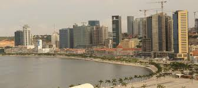

Angola, oficialmente República de Angola, é um país da costa ocidental da África, cujo território principal é limitado a norte e a nordeste pela República Democrática do Congo, a leste pela Zâmbia, a sul pela Namíbia e a oeste pelo Oceano Atlântico. Inclui também o exclave de Cabinda, através do qual faz fronteira com a República do Congo, a norte. Para além dos vizinhos já mencionados, Angola é o país mais próximo da colónia britânica de Santa Helena.
Os portugueses estiveram presentes desde o século XV em alguns pontos do que é hoje o território de Angola, interagindo de diversas maneiras com os povos nativos, principalmente com aqueles que moravam no litoral. A delimitação do território apenas aconteceu no início do século XX. O primeiro europeu a chegar a Angola foi o explorador português Diogo Cão. Angola foi uma colónia portuguesa que apenas abrangeu o actual território do país no século XIX e a "ocupação efectiva", como determinado pela Conferência de Berlim em 1884, aconteceu apenas na década de 1920.
A iiiiiii independência do domínio português foi alcançada em 1975, depois de uma longa guerra de libertação. Após a independência, Angola foi palco de uma intensa guerra civil de 1975 a 2002, maioritariamente entre o Movimento Popular de Libertação de Angola (MPLA) e a União Nacional para a Independência Total de Angola (UNITA). Apesar do conflito interno, áreas como a Baixa de Cassanje mantiveram activos seus sistemas monárquicos regionais. No ano de 2000 foi assinado um acordo de paz com a Frente para a Libertação do Enclave de Cabinda (FLEC), uma frente de guerrilha que luta pela secessão de Cabinda e que ainda se encontra activa. É da região de Cabinda que sai aproximadamente 65% do petróleo de Angola.
O país tem vastos recursos naturais, como grande reservas de minerais e de petróleo e, desde 1990, sua economia tem apresentado taxas de crescimento que estão entre as maiores do mundo, especialmente depois do fim da guerra civil. No entanto, os padrões de vida angolanos continuam baixos; cerca de 70% da população vive com menos de dois dólares por dia, enquanto as taxas de expectativa de vida e mortalidade infantil no país continuam entre os piores do mundo, além da presença proeminente da desigualdade económica, visto que a maioria da riqueza do país está concentrada em um setor desproporcionalmente pequeno da população. Angola também é considerado um dos países menos desenvolvidos do planeta pela Organização das Nações Unidas e um dos mais corruptos do mundo pela Transparência Internacional.
Os habitantes originais de Angola foram caçadores-colectores coissã, dispersos e pouco numerosos. A expansão dos povos bantos, chegando do norte a partir do segundo milénio, forçou os coissã (quando não eram absorvidos) a recuar para o sul onde grupos residuais existem até hoje, em Angola (ver mapa étnico), na Namíbia e no Botsuana.
Os bantos eram agricultores e caçadores. Sua expansão, a partir da África Centro-Ocidental, se deu em grupos menores, que se relocalizaram de acordo com as circunstâncias político-económicas e ecológicas. Entre os séculos XIV e XVII, uma série de reinos foi estabelecida, sendo o principal o Reino do Congo que abrangeu o Noroeste da Angola de hoje e uma faixa adjacente da hoje República Democrática do Congo, da República do Congo e do Gabão; a sua capital situava-se em M'Banza Congo e o seu apogeu se deu durante os séculos XIII e XIV. Outro reino importante foi o Reino do Ndongo, constituído naquela altura a Sul/Sudeste do Reino do Congo. No Nordeste da Angola actual, mas com o seu centro no Sul da actual República Democrática do Congo, constituiu-se, sem contacto com os reinos atrás referidos, o Reino da Lunda.
Em 1482 chegou na foz do rio Congo uma frota portuguesa, comandada pelo navegador Diogo Cão que de imediato estabeleceu relações com o Reino do Congo. Este foi o primeiro contacto de europeus com habitantes do território hoje abrangido por Angola, contacto este que viria a ser determinante para o futuro deste território e das suas populações.
A partir do fim do século XV, Portugal seguiu na região uma dupla estratégia. Por um lado, marcou continuamente presença no Reino do Congo, por intermédio de (sempre poucos, mas influentes) padres cultos (portugueses e italianos) que promoveram uma lenta cristianização e introduziram elementos da cultura europeia. Por outro, estabeleceu em 1575 uma feitoria em Luanda, num ponto de fácil acesso ao mar e à proximidade dos reinos do Congo e de Ndongo. Gradualmente tomaram o controle, através de uma série de tratados e guerras, de uma faixa que se estendeu de Luanda em direcção ao Reino do Ndongo. Este território, de uma dimensão ainda bastante limitada, passou mais tarde a ser designado como Angola. Por intermédio dos Reinos do Congo, do Ndongo e da Matamba, Luanda desenvolveu um tráfico de escravos com destino a Portugal, ao Brasil e à América Central que passou a constituir a sua base económica. Este processo tem que ser visto contra o pano de fundo de um sistemático tráfego de escravos a partir de Luanda
Os holandeses ocuparam Angola entre 1641 e 1648, procurando estabelecer alianças com os estados africanos da região. Em 1648, Portugal retomou Luanda e iniciou um processo de conquista militar dos estados do Congo e Ndongo que terminou com a vitória dos portugueses em 1671, redundando num controle sobre aqueles reinos.
Entretanto, Portugal tinha começado a estender a sua presença no litoral em direcção ao Sul. Em 1657 estabeleceu uma povoação perto da actual cidade de Porto Amboim, transferida em 1617 para a actual Benguela que se tornou numa segunda feitoria, independente da de Luanda. Benguela assumiu aos poucos o controle sobre um pequeno território a norte e leste, e iniciou por sua vez um tráfego de escravos, com a ajuda de intermediários africanos radicados no Planalto Central da Angola de hoje.
Embora tenha, desde o início da sua presença em Luanda e Benguela, havido ocasionais incursões dos portugueses para lá dos pequenos territórios sob o seu controle, esforços sérios de penetração no interior apenas começaram nas primeiras décadas do século XIX, abrandado em meados daquele século, mas recomeçando com mais vigor nas suas últimas décadas. Estes avanços eram em parte militares, visando o estabelecimento de um domínio duradouro sobre determinadas regiões, e tiveram geralmente que vencer, pelas armas, uma resistência maior ou menor das respectivas populações Em outros casos tratou-se, no entanto, apenas de criar postos avançados destinados a facilitar a extensão de redes comerciais. Formas particulares de penetração económica foram desenvolvidas no Sul, a partir de Moçâmedes (hoje Namibe). Finalmente, houve naquele século a implantação das primeiras missões católicas para lá dos perímetros controlados por Luanda e Benguela.[21]
No momento em que se realizou em 1884/85 a Conferência de Berlim, destinada a acertar a distribuição de África entre as potências coloniais, Portugal pode portanto fazer valer uma presença secular em dois pontos do litoral, e uma presença mais recente (administrativa/militar, comercial, missionária) numa série de pontos do interior, mas estava muito longe de uma "ocupação efectiva" do território hoje abrangido por Angola.
Perante a ameaça das outras potências coloniais, de se apropriarem de partes do território reclamada por Portugal, este país iniciou finalmente, na sequência da Conferência de Berlim, um esforço que visava a ocupação de todo o território da Angola actual. Dados os seus recursos limitados, os progressos neste sentido foram, no entanto, lentos: ainda em 1906, apenas 5% a 6% dos territórios podiam, com alguma razão, ser considerados "efectivamente ocupados". Só depois do advento da República em Portugal, em 1910, a expansão do Estado colonial avançou de forma mais consequente. Em meados dos anos 1920 estava alcançado um domínio integral do território, muito embora houvesse ainda em 1941 um breve surto de "resistência primária", da parte da etnia vacuval. Embora lento, este esforço de ocupação não deixou, porém, de provocar novas dinâmicas sociais, económicas e políticas.
Alcançada a desejada "ocupação efectiva", Portugal - melhor dito: o regime ditatorial entretanto instaurado naquele país por António de Oliveira Salazar - concentrou-se em Angola na consolidação do Estado colonial. Esta meta foi atingida com alguma eficácia. Num lapso de tempo relativamente curto foi edificada uma máquina administrativa dotada de uma capacidade não sem falhas, mas sem dúvida significativa de controle e de gestão. Esta garantiu o funcionamento de uma economia assente em dois pilares: o de uma imigração portuguesa que, em poucas décadas, fez subir a população europeia para mais de 100 000, com uma forte componente empresarial, e o de uma população africana sem direito à cidadania, na sua maioria - ou seja, com a excepção dos povos (agro-)pastores do Sul - remetida para uma pequena agricultura orientada para os produtos exigidos pelo colonizador (café, milho, sisal), pagando impostos e taxas de vária ordem, e muitas vezes obrigada, por circunstâncias económicas e/ou pressão administrativa, a aceitar trabalhos assalariados geralmente mal pagos.
Nos anos 1950 começou a articular-se uma resistência multifacetada contra a dominação colonial, impulsionada pela descolonização que se havia iniciado no continente africano, depois do fim da Segunda Guerra Mundial, em 1945. Esta resistência, que visava a transformação da colónia de Angola em país independente, desembocou a partir de 1961 num combate armado contra Portugal que teve três principais protagonistas:
o Movimento Popular de Libertação de Angola (MPLA), cuja principal base social eram os ambundos e a população mestiça bem como partes da inteligência branca, e que tinha laços com partidos comunistas em Portugal e países pertencentes ao então Pacto de Varsóvia; a Frente Nacional de Libertação de Angola (FNLA), com fortes raízes sociais entre os congos e vínculos com o governo dos Estados Unidos e ao regime de Mobutu Sese Seko no Zaire, entre outros; a União Nacional para a Independência Total de Angola (UNITA), socialmente enraizada entre os ovimbundos e beneficiária de algum apoio por parte da China. Logo depois do início do conflito armado, uma "ala liberal" no seio da política portuguesa impôs uma reorientação incisiva da política colonial. Revogando já em 1962 o Estatuto do Indigenato e outras disposições discriminatórias, Portugal concedeu direitos de cidadão a todos os habitantes de Angola [nota 7] que de "colónia" passou a "província" e mais tarde a "Estado de Angola". Ao mesmo tempo expandiu enormemente o sistema de ensino, dando assim à população negra possibilidades inteiramente novas de mobilidade social - pela escolarização e a seguir por empregos na função pública e na economia privada. A finalidade desta reorientação foi a de ganhar "mentes e corações" das populações angolanas para o modelo de uma Angola multi-racial que continuasse a fazer parte de Portugal, ou ficar estreitamente ligado à "Metrópole".
Esta opção foi, no entanto, rejeitada pelos três movimentos de libertação que continuaram a sua luta. Nesta começaram, porém, a registar-se mais retrocessos do que progressos, e nos primeiros anos 1970 as hipóteses de conseguir a independência pelas armas tornaram-se muito fracas. Na maior parte do território a vida continuou com a normalidade colonial. É certo que houve uma série de medidas de segurança, das quais algumas - como controles de circulação, ou o estabelecimento de "aldeias concentradas" em zonas como o Planalto Central, no Cuanza Norte e no Cuanza Sul - afectaram a população em grau maior ou menor.